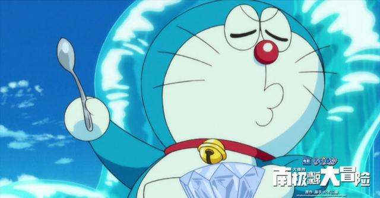

|
哆啦A梦  日文名：ドラえもん 英文名：Doraemon 别名：阿蒙、小叮当、机器猫、小哆啦 出生地：东京松芝机械工厂 生日：2112年9月3日（处女座） 机器人种类：育儿型机械器 型号：猫型机器人1293号 品质：次品 代号：MS-903 身高：129.3cm 体重：129.3kg 胸围：129.3cm 坐高：100.0cm 总外形：油桶 功率：129.3马力(一个成年人的力量约为0.5马力) 遇见老鼠时的弹跳高度：129.3cm 遇见老鼠时的逃跑速度：129.3km/h(平时跑50米要用10秒) (129.3这个数字在哆啦A梦的生日——2112年9月3日中也使用过。据说，这个数字是多啦A梦故事连载开始时，日本小学四年级学生的平均身高。而大雄就读的年级正是小学四年级。） |